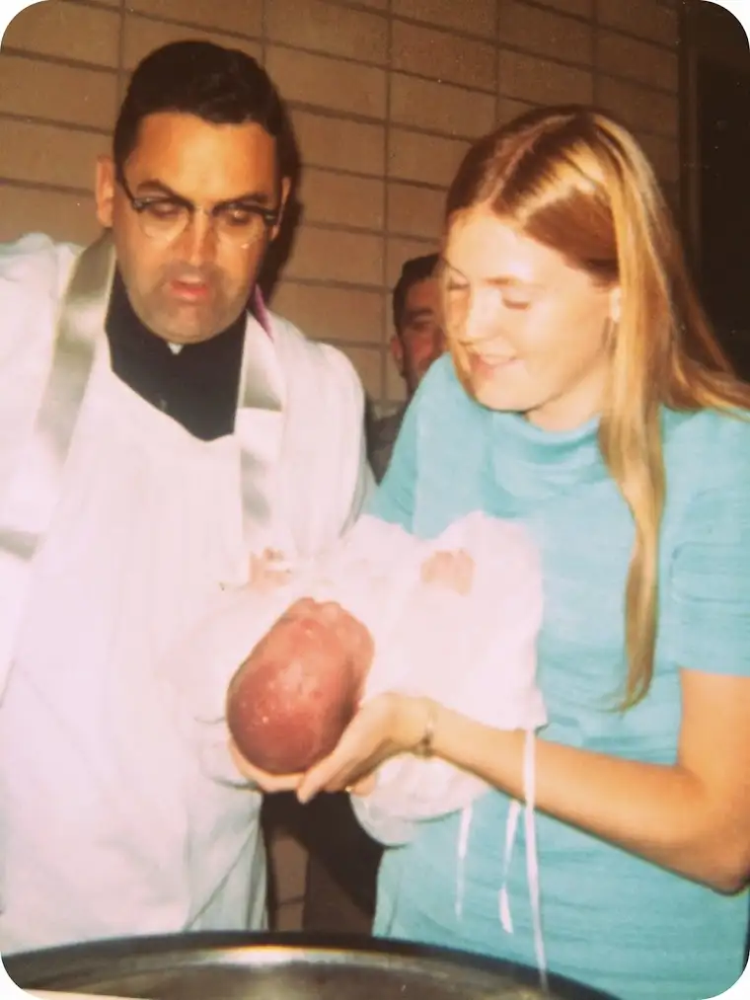

For years, ever since my children were small, I’ve been making a big deal of their baptism anniversaries. To me, this day equaled and even exceeded the importance of their actual birthday. And so we celebrate with pie of their choice, a special meal and the lighting of their baptismal candle.
Because this wasn’t a tradition in our home growing up, I haven’t thought much about my own baptism date. Instead, I focused on the kids’ special days. But recently, I got to thinking about my own pivotal moment of new life in Christ while perusing my first-ever photo album, and I realized anew that I, too, have every reason to celebrate my becoming a child of God.
 |
| Fr. O’Flannigan and my Aunt Aunt and me, 9-12-68 |
{kind=link}
The more I grow in my own faith journey, the more meaning I find gazing at this certificate:
{kind=link}
Why it took so long for me to fixate on this, I don’t know, but suddenly I am overtaken with gratitude that my mother took the time to record this special day, certainly one of the climactic moments of my life. Her mother heart knew I wouldn’t remember the day, but guessed I’m sure that someday, I might want to reflect back on it.
Forty-six years later, these photos mean so very much.
I am reminded anew that the water poured over my head…
{kind=link}
and the the oil placed on my forehead in the sign of the cross…
{kind=link}
along with the priestly blessing in the stead of Jesus Christ himself…
{kind=link}
and the very real but invisible grace imparted in this moment with the words, “I baptize you in the name of the Father, Son and Holy Spirit…”
{kind=link}
…combine to create the beginnings of my life in Christ. And despite all my missteps along the way, and all the fussing I’ve done, somehow because of this day, I have managed to find my way back to the center of love.
{kind=link}
Catholics believe in infants being baptized for this reason. We don’t believe baptism to be a moment when we can audibly profess our belief in Christ, but the one when Christ himself chooses us, claims us for His own. With the help and support of our families and Church community, this seed of grace will be watered. And then ultimately, we decide whether to continue to grow in this direction through the choices we make each day.
{kind=link}
{kind=link}
We can’t undo our baptisms. Once we are claimed by the God Most High, that’s it. We are His, forever. Certainly, we can choose to turn our backs on this Love, but He will always be waiting for our return.
Remembering our baptism is about more than a piece of pie (though, in case anyone is wondering, I chose my favorite, pecan) and a special meal. It is a thinking back on the most monumental moment of our life as a Christian.
I didn’t need to be fully cognizant of what was going on. That seed of grace was planted, and over time, did grow into something that has changed my life, forever.
Thank you, Mom, thank you, Dad, for passing on this beautiful faith of hope, love and life to me. Please be assured I am doing all I can to make good on the promises you made to God to bring me up in the faith. Please pray with me that my children will feel this grace stirring within their own souls so that they, too, will feel compelled to run into the arms of Jesus and surrender to his plan for them.
{kind=link}
{kind=link}